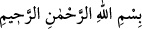
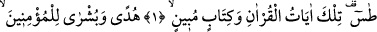
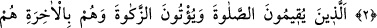
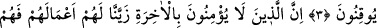
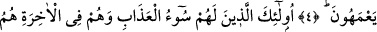
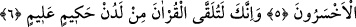

HİDÂYET REHBERİ
Rahmân ve Rahîm (olan) Allâh’ın adıyla.
1. Tâ. Sîn. Bunlar Kur’an’ın, (gerçekleri) açıklayan Kitab’ın âyetleridir.
2. Îman eden müminler için bir hidâyet rehberi ve bir müjdedir.
3. Onlar ki, namazı kılarlar, zekâtı verirler ve ahirete de kesin olarak inanırlar.
4. Şüphesiz biz, ahirete inanmayanların işlerini kendilerine süslü gösterdik; o
yüzden bocalar dururlar.
5. İşte bunlar, azâbı en ağır olanlardır; ahirette en çok ziyana uğrayacaklar da
onlardır.
6. (Rasûlüm!) Şüphesiz ki bu Kur’an, hikmet sâhibi ve her şeyi bilen Allah
tarafından sana verilmektedir.
“Tâ. Sîn.” Bu Tâ Sîn’dir. Yâni bu sûre bu adla isimlendirilmiştir.
et-Te’vîlâtü’n-Necmiyye’de der ki: “Tâ”sı ile kendisini sevenlerin kalblerinin tıyb
(güzel ve temiz) oluşuna, “sîn” ile kendisiyle kendisini sevenlerin kalbleri arasındaki
sırra işâret eder ki orada onları ne mukarreb bir melek ve ne de mürsel bir peygamber
kuşatabilir. Yine “Tâ” ile tâliblerin talebine, “sîn” ile kalblerinin kendisinden başkasını
(mâsivâ) talebden selâmette oluşlarına yemin etmektedir.
Keşfü’l-esrâr’da der ki: “Tâ” mübarek zâtının tahâretine/temizliğine, “sîn” izzetinin
yüksekliğine işârettir. Allah Teâlâ: “Zâtımın kudsiyetinin tahâretine/temizliğine,
izzetimin yüksekliğine yemin olsun ki lütfumu ümîd edenin ümîdini boşa çıkarmam.”
buyuruyor.”
Bazıları demiştir ki: “Tâ” Allah’ın tavline, yâni fazlına; “sîn” senâsına, yâni
yüceliğine işârettir. Bu konuyla ilgili söylenecekler “Tâ Sîn Mîm” (eş-Şuarâ, 26/1)’de
geçti. Oraya mürâcaat et.
Aynülkudât Hemedânî (k.s.), Makâlât’ında der ki: “Kur’ân’daki mukattaa harfleri